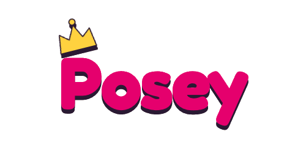
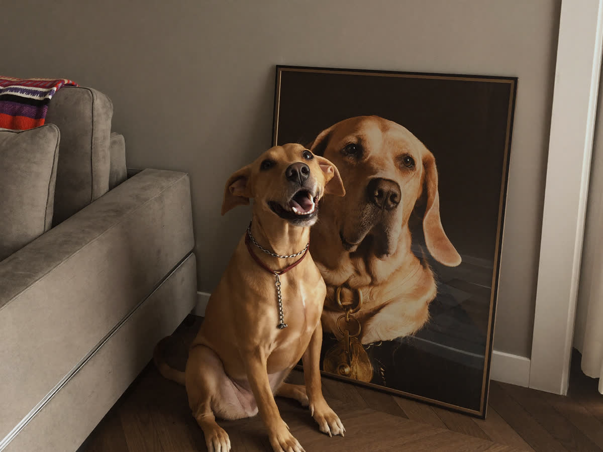
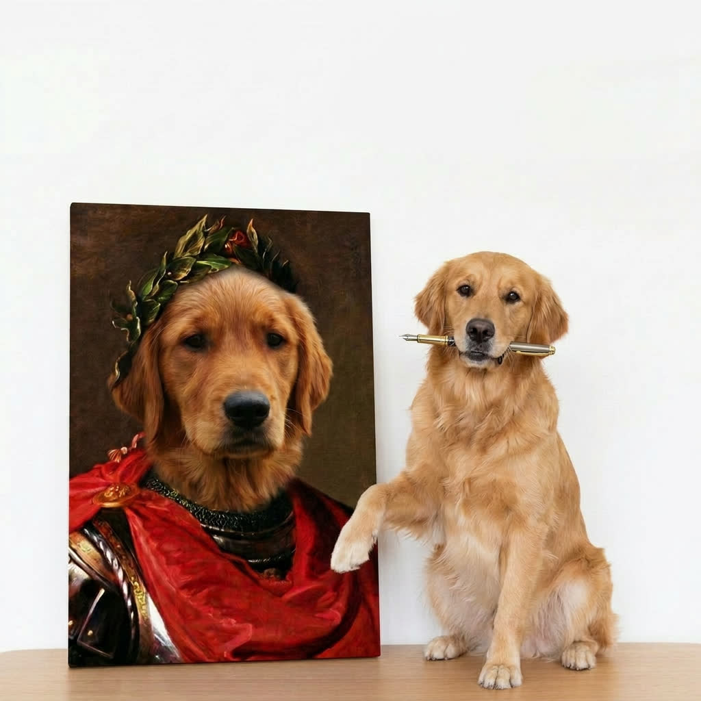
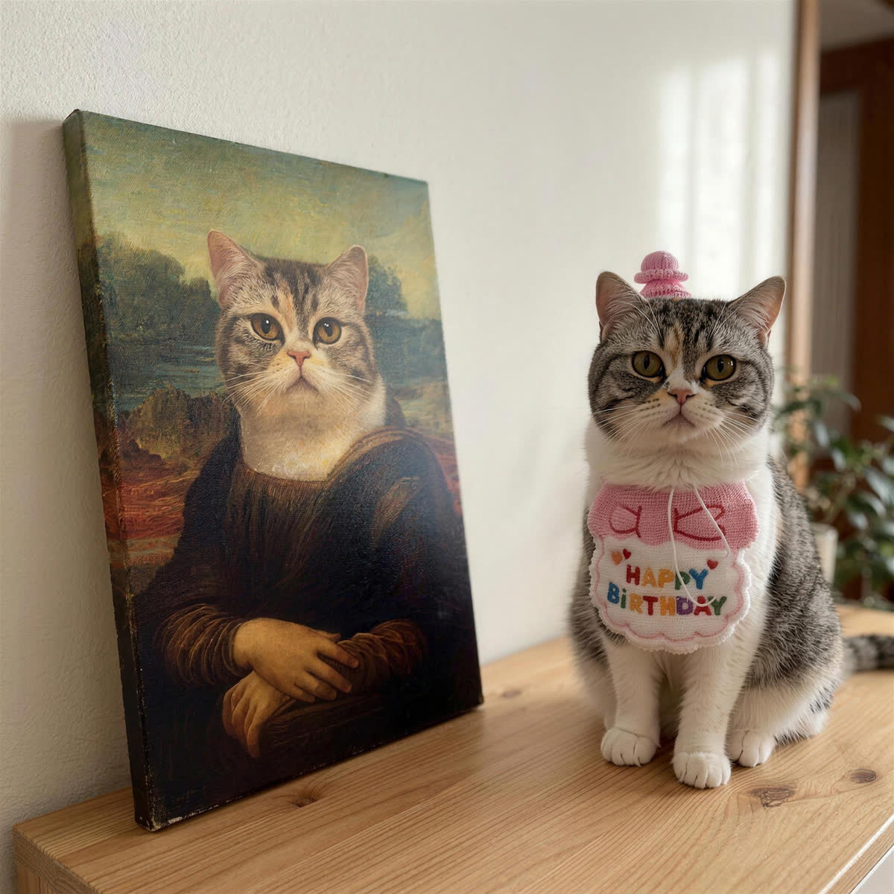
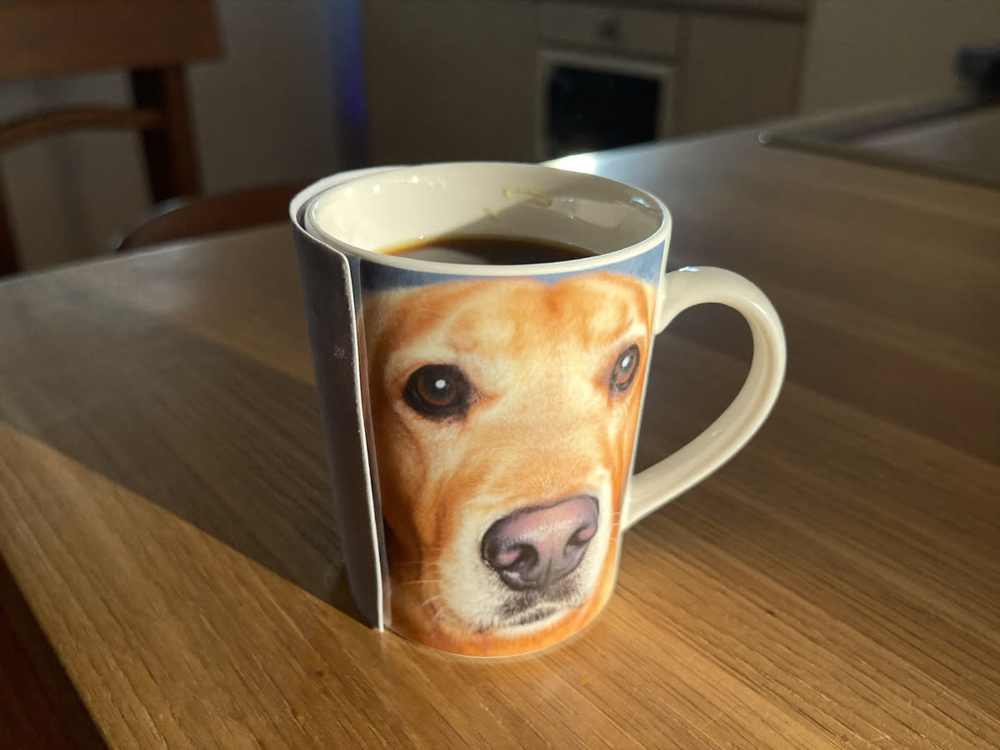
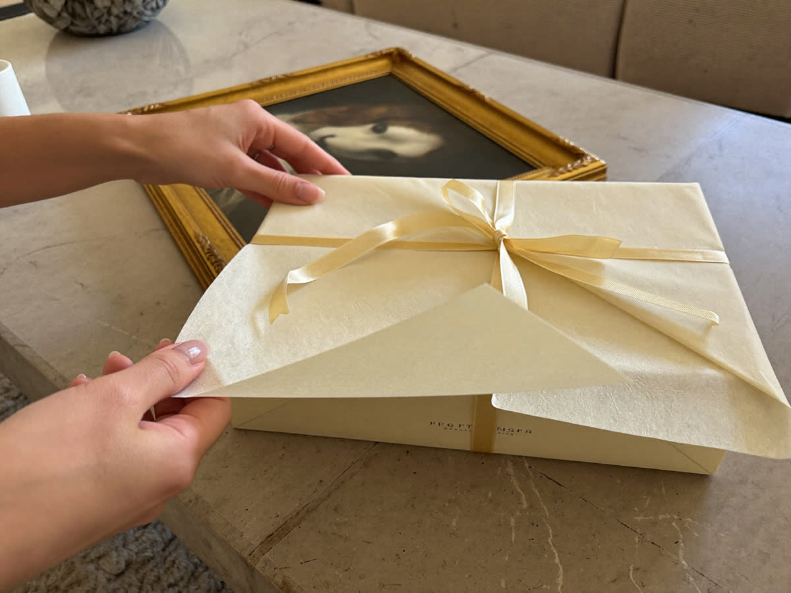
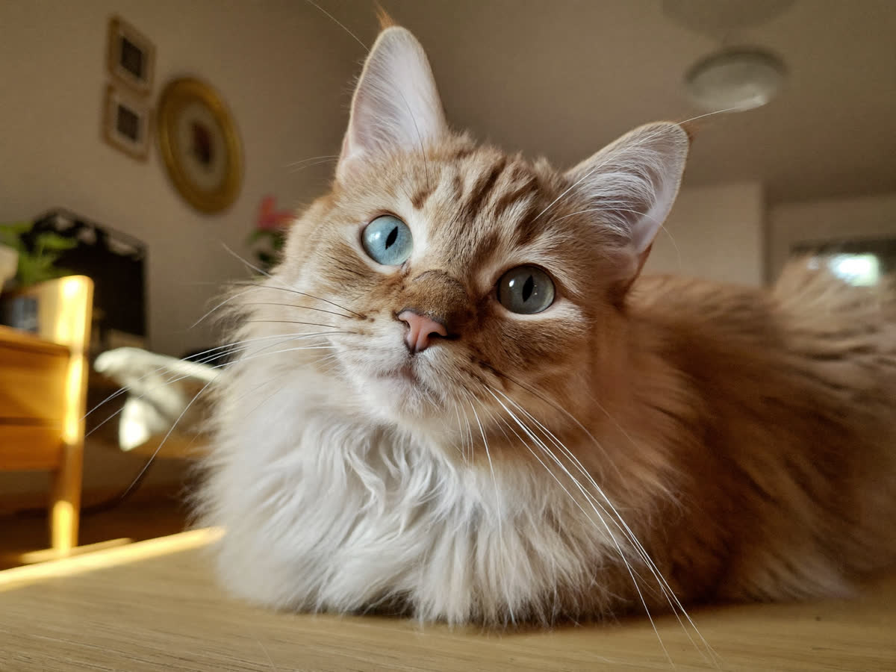

PoseyPets
Ein deutscher Onlineshop für individuelle Tierportraits. Der Kunde lädt ein Foto hoch, und sein Tier wird als historische Figur gemalt. Die Aufgabe: gefunden werden, ohne jeden Besucher einkaufen zu müssen.
poseypets.com ansehenOffenlegung: PoseyPets ist ein eigenes Projekt. Wir zeigen es, weil wir dort jeden Schritt selbst gegangen sind und offen darüber schreiben können, auch über das, was nicht funktioniert hat.

01
Ausgangssituation
Neuer Shop, keine Domainhistorie, null Sichtbarkeit
Ein neuer Shop ohne Domainhistorie, in einem Umfeld, in dem bereits internationale Anbieter stehen. Zum Start war der Shop bei Google für keinen einzigen relevanten Begriff zu finden. Es gab keine eingehenden Links, keine Historie, keine Seite, die irgendwo rankte.
Die naheliegende Alternative wäre gewesen, jeden Besucher über bezahlte Anzeigen einzukaufen. Das funktioniert, solange Budget da ist, und endet an dem Tag, an dem es aufhört. Bei einem Produkt mit begrenztem Warenkorbwert frisst es außerdem die Marge: Wenn der Klickpreis steigt, steigt er für jede einzelne Bestellung mit, und die Rechnung geht irgendwann nicht mehr auf.
Also sollte die organische Suche die tragende Säule werden, mit allem, was das bedeutet: langsamer Start, kein Ergebnis in den ersten Wochen, und eine Reihenfolge, von der nicht abgewichen wird. Die folgenden Bereiche beschreiben genau diese Reihenfolge.


02
Keyword-Recherche
Der komplette erste Monat, bevor eine Zeile geschrieben wurde
Der erste Monat ging vollständig in die Recherche. Keine Landingpage, kein Blogbeitrag, keine Produktbeschreibung, bevor die Begriffsliste stand. Das klingt nach verlorener Zeit und ist das Gegenteil davon: Jede Seite, die danach entstand, hatte einen Begriff, für den sie gebaut wurde, und jeder Artikel ein Thema, von dem vorher feststand, dass danach gesucht wird.
Gearbeitet wurde mit Sistrix. Jeder einzelne Begriff wurde angesehen, nicht nur die offensichtlichen: Suchvolumen, Wettbewerb, und vor allem die Absicht dahinter. Wer „Hundeportrait malen lassen“ eingibt, will kaufen. Wer „Hundeportrait malen“ eingibt, will es selbst tun. Dazwischen liegt ein Buchstabe und der gesamte Unterschied zwischen einer Bestellung und einem Besucher, der nie etwas kauft.
Der wichtigste Fund kam ganz am Anfang und hat danach die gesamte Struktur bestimmt: bei diesen Begriffen entscheidet die Schreibweise über den Erfolg.
„Haustier Portrait“ und „Haustierportrait“ sind für Google nicht dasselbe Wort. Der Unterschied im Suchvolumen liegt beim Zehnfachen.
Und es gibt keine Regel dafür. Bei einem Tier gewinnt die getrennte Schreibweise deutlich, beim nächsten die zusammengeschriebene. Das muss pro Begriff geprüft werden, bevor irgendetwas geschrieben wird, denn die Schreibweise steckt später im Titel, in der Überschrift, in der URL und in jedem internen Link, der darauf zeigt. Sie lässt sich nicht beiläufig korrigieren.
Genauso wichtig war, was aussortiert wurde. Ein ganzer Begriffscluster sah nach viel Volumen aus, bestand aber fast vollständig aus Leuten, die selbst malen lernen wollen. Ein zweiter war komplett wertlos, weil die Suchenden etwas ganz anderes meinten. Beide wurden gestrichen, bevor Arbeit hineinfloss. Das ist die unsichtbare Hälfte der Recherche: Nicht nur zu wissen, worauf man zielt, sondern worauf man bewusst nicht zielt.
Am Ende des Monats stand eine sortierte Liste. Aus ihrem oberen Teil wurden die Landingpages, aus dem langen unteren Teil die Themen für Ratgeber und Lexikon. Beides kam aus derselben Datei, und keine Seite und kein Artikel entstand ohne Eintrag darin.
03
Seitenstruktur
Ein Suchbegriff, eine Seite. Sechs Landingpages als Einstiege.
Aus der Liste wurden sechs eigene Landingpages gebaut, je eine pro Hauptbegriff, nach einer einzigen Regel: ein Suchbegriff, eine Seite.
Der Grund dafür ist unspektakulär und wird trotzdem ständig übersehen. Google rankt keine Shops, sondern einzelne Seiten. Gibt es zwei Seiten, die dasselbe Thema behandeln, muss Google sich entscheiden, welche davon zum Suchbegriff passt, und beide verlieren: Jede bekommt einen Teil der Signale, keine bekommt genug, um vorn zu stehen. Im Fachjargon heißt das Keyword-Kannibalisierung, praktisch heißt es, dass man sich selbst Konkurrenz macht.
Eine Landingpage ist hier keine Textseite, sondern eine vollwertige Produktübersicht zu genau einem Begriff. Die Überschrift trägt den Begriff in der Schreibweise, die vorher gewonnen hat. Darunter kommen ein kurzer Einstieg, die passenden Produkte, die wiederkehrenden Fragen zu genau diesem Motiv und Links zu den Artikeln, die dazu gehören. Wer über die Suche kommt, sieht sofort Produkte und nicht erst 800 Wörter Einleitung — die Reihenfolge auf der Seite folgt dem, was der Besucher in diesem Moment vorhat.
Darunter liegt die zweite Ebene: die Produktseiten. Jede bekam einen eigenen Textblock, der auf ihren eigenen Begriff zugeschnitten ist, statt überall denselben Beschreibungstext zu wiederholen. Daneben, nicht darunter, stehen Ratgeber und Lexikon. So entsteht eine Struktur, in der jede Seite eine Aufgabe hat und keine zwei Seiten dieselbe.
04
Inhalte und Blog
Jeden Tag ein Beitrag, in zwei Formaten mit zwei Aufgaben
Seit dem Start erscheint jeden Tag ein Beitrag. Nicht wöchentlich, nicht wenn gerade Zeit ist, sondern täglich. Das ist weniger eine kreative als eine rechnerische Entscheidung: Jeder Artikel ist ein eigener Einstiegspunkt in die Suche. Einer bringt fast nichts. Hundert bringen, nach einigen Monaten, einen Strom, der nicht von einzelnen Begriffen abhängt und den kein Wettbewerber mit einer einzelnen guten Seite einholt.
Die Themen kommen nicht aus Einfällen, sondern aus dem unteren Teil der Keyword-Liste aus Bereich 02. Jeder Beitrag hat einen Begriff, für den er geschrieben wurde. Gibt es keinen, wird er nicht geschrieben.
Dafür gibt es zwei bewusst unterschiedliche Formate statt eines Blogs, weil sie zwei verschiedene Aufgaben haben:
- Ratgeber für die ausführlichen Fragen, die sich jemand vor dem Kauf stellt. Längere Stücke, die eine Entscheidung vorbereiten — welches Foto sich eignet, welcher Stil zu welchem Tier passt, wie lange es dauert.
- Lexikon von A bis Z für die vielen kurzen Begriffssuchen, mit eigener Filterung. Kurze Einträge, die jeweils einen Begriff sauber erklären und von dort weiterführen.
Dazu eine feste Regel für die interne Verlinkung: etwa 60 Prozent der Links zeigen auf Seiten, die verkaufen, 40 Prozent auf weitere Inhalte. Diese Quote wird bei jedem Beitrag eingehalten, nicht im Nachhinein geprüft.
Warum diese Regel
Ohne sie verlinkt ein Blog nach einiger Zeit fast nur noch sich selbst. Die Artikel ranken dann vielleicht, schieben aber keine Kraft mehr auf die Seiten, an denen tatsächlich Geld verdient wird. Man hat dann eine gut besuchte Inhaltssammlung gebaut und keinen Shop.


05
Technisches SEO
Metadaten, Alt-Texte, Auszeichnung, Ladezeit, interne Links
Technik bringt selten allein eine Position. Sie verhindert aber, dass alles andere wirkungslos bleibt. Deshalb lief sie parallel mit, von Anfang an und über den gesamten Shop, nicht als einmalige Aufräumaktion.
- Metadaten über alle Produkte und Kategorien. Jede Seite hat einen eigenen Titel und eine eigene Beschreibung, beide mit dem Begriff, für den die Seite gebaut wurde. Kein generiertes Muster, das sich über hundert Seiten wiederholt. Der Titel entscheidet nicht nur über die Einordnung, sondern darüber, ob jemand im Suchergebnis überhaupt klickt.
- Alt-Texte für jedes Bild. In einem Shop, der von Bildern lebt, ist das doppelt wichtig: Sie beschreiben Screenreadern, was zu sehen ist, und sie sind das Einzige, woran die Bildersuche ein Motiv erkennt. Bei „Tierportrait“ ist die Bildersuche ein eigener Einstieg, nicht ein Nebenschauplatz.
- FAQ mit passender Auszeichnung. Die wiederkehrenden Fragen stehen strukturiert ausgezeichnet auf der Seite, sodass Google sie als Frage-Antwort-Paare erkennen und direkt im Suchergebnis anzeigen kann. Das vergrößert den eigenen Eintrag und nimmt Platz, den sonst jemand anderes bekommt.
- Ladezeit und Darstellung auf dem Handy. Der größte Teil der Besucher kommt mobil. Eine Seite, die zu lange lädt, verliert Besucher, bevor sie etwas gesehen haben — und die abgebrochenen Aufrufe sind für Google ein Signal, das auf die Position zurückwirkt.
- Interne Verlinkung bis in den Footer. Jede wichtige Seite ist von mehreren Stellen aus erreichbar, auch aus dem Fußbereich. Was nur über die Suche im Shop zu finden ist, findet Google schlecht und ein Besucher gar nicht.
Eine Entscheidung fiel gegen den ersten Impuls: bestehende URLs wurden nicht umgezogen, obwohl eine andere Struktur auf dem Papier aufgeräumter gewesen wäre. Die Seiten rankten bereits.
Einen vorhandenen Rankingaufbau für eine kosmetische Verbesserung wegzuwerfen, ist einer der teuersten Fehler überhaupt. Wir sehen ihn ständig.
06
Linkaufbau
Gezielte Ansprache passender Unternehmen, rund 30 externe Links
Linkaufbau kam zuletzt, und das hat einen Grund: Solange Technik, Struktur und Inhalte nicht stehen, zeigen Links auf eine Seite, die die Aufmerksamkeit nicht halten kann. Erst als die sechs Landingpages standen und der tägliche Takt lief, ergab es Sinn, dass von außen jemand darauf zeigt.
Das Vorgehen ist Handarbeit und sieht so aus: Wir suchen Unternehmen und Seiten, die inhaltlich zu PoseyPets passen — Tierbedarf, Geschenke, Fotografie, Tierblogs — und die selbst eine echte, sichtbare Seite betreiben. Wer selbst nicht gefunden wird, kann niemanden weiterempfehlen. Diese Betriebe werden angeschrieben, persönlich und mit einem konkreten Vorschlag.
Angeboten wird eines von zwei Dingen:
- Ein Linktausch, bei dem beide Seiten voneinander profitieren, weil die Themen tatsächlich zusammenpassen und die Erwähnung für die Leser der anderen Seite Sinn ergibt.
- Ein Gastartikel, für den wir den Beitrag schreiben. Die andere Seite bekommt einen Inhalt, den sie sonst selbst erstellen müsste, und wir die Verlinkung aus dem Text heraus.
Auf diesem Weg sind für PoseyPets rund 30 externe Links entstanden. Keiner davon gekauft, keiner aus einem Linknetzwerk, keiner aus einem Verzeichnis, das nur existiert, um Links zu verteilen. Das ist bewusst so: Gekaufte und maschinell verteilte Links lassen sich erkennen, und der Schaden trifft dann nicht eine Unterseite, sondern die gesamte Domain.
Es ist der langsamste Bereich von allen. Dreißig gute Links brauchen deutlich mehr Zeit als dreihundert schlechte, und genau darin liegt ihr Wert.
07
Stand heute
Live, verkauft, und die Sichtbarkeit baut sich weiter auf
Der Shop ist live, verkauft und läuft geschäftlich gut. Die Sichtbarkeit baut sich weiter auf, die Landingpages ranken für ihre jeweiligen Begriffe, der tägliche Takt bei den Inhalten läuft unverändert weiter, und die Zahl der externen Erwähnungen wächst langsam mit.
SEO ist hier kein abgeschlossenes Projekt, sondern die Grundlage, auf der weitergearbeitet wird. Das ist die ehrliche Beschreibung: Es gibt keinen Tag, an dem man fertig ist. Es gibt einen Punkt, ab dem die Arbeit der letzten Monate ohne weiteres Zutun Besucher bringt, und danach entscheidet man, wie viel man noch darauflegt.

08
Was daraus für andere folgt
Die Reihenfolge entscheidet, und die halbe Stunde am Anfang
Die Reihenfolge entscheidet. Zuerst prüfen, welche Suchbegriffe überhaupt zu Umsatz führen, dann die Seiten dafür bauen, dann Inhalte produzieren, und erst ganz zum Schluss Links aufbauen. Wer umgekehrt anfängt, schreibt Texte für Suchanfragen, die nie zu einer Anfrage führen, und merkt es erst nach Monaten.
Und die Schreibweise prüfen. Eine falsch gewählte Variante kostet dauerhaft den Großteil des möglichen Volumens, weil sie in Titeln, URLs und Überschriften steckt. Diese halbe Stunde am Anfang ist die billigste Stunde im ganzen Projekt.
Beides lässt sich auf fast jedes Geschäft übertragen, das über Google gefunden werden will. Nur die Begriffe sind andere.
Wo steht Ihre Seite gerade?
Sie bekommen schriftlich, für welche Suchbegriffe Sie gefunden werden, wer vor Ihnen steht und woran es liegt.